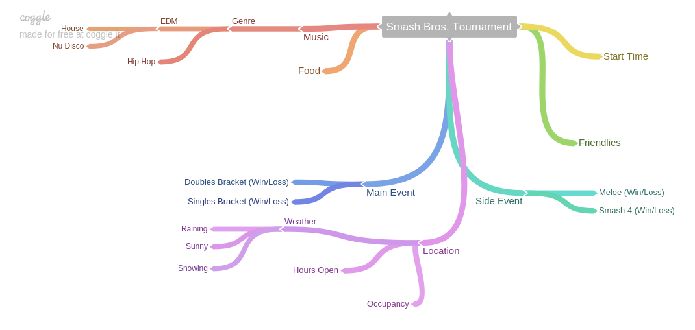

Persuasive Essay
Project Explanation
This project required me to identify a severe issue in modern day society while offering a solution that would be accepted by both sides of the issue. The topic was open ended to encourage students to choose an issue that they could passionately identify with. The points made must be supported with strong evidence that accurately identifies the problem. This was a useful way to revisit MLA citations in a relevant project. In addition, the project was presented to the class which would give feedback to the presenter about their argument. Students with opposing beliefs were encouraged to participate, so the end solution would represent both sides equally.
Project Reflection
My topic, Internet Censorship, motivated me to research more about its implementation nationwide. Prior to my research, I completely refused to accept the Internet Censorship should be utilized in the modern age. However, evidence referenced by those with opposing viewpoints offered defendable evidence that resulted in me understanding their beliefs. This project taught me how to accept audience feedback when arguing a solution. Persuasive writing skills are an incredibly valuable asset for communicative works. This project strengthened my ability as a writer to identify effective evidence that would encourage the reader to rethink their position. Overall, this project contributed to my ability to successfully present information in future assignments.
Ecaudor Travel Site
Project Explanation
This project introduced me to adding more functionality to a site. Initially, the basic websites we created lacked the interactivity crucial for a successful site. However, this Ecuador themed travel site required us to meet the demands of a hypothetical client. One of the requirements of the project was to offer an English to Spanish translation. In addition, we needed to research accurate information that could easily be found. Usability testing was a core focus of the project as developers should consistently identify potential flaws in their current design. Overall, this large scale assignment required students to implement their current skills into a real world project.
Project Reflection
This project helped clarify the necessity of usability testing to deliver an effective product. Maintaining an accessible site ensures that the client will be able to bring their website to a larger audience. I learned some interesting methods web developers use to offer accessibility to those who need it. The two major accessibility tools implemented were alternate text for those who are unable to see images and screen reader support. In addition, the translation function was fairly difficult as we were not given the “correct” method of implementation. This encouraged me to research a wide variety of techniques that could have been used. Overall, this project contributed to my ability to quickly problem solve while taking feedback from clients and users.
Javascript Quizmaker

Project Explanation
This project featured the first major javascript implementation of Web Design. We were tasked with making a fully functional quiz with randomized questions and verified responses. The questions and answers were not allowed to be coded into HTML, so I needed to rapidly learn Javascript to meet the expectations of the project. In addition, a fully functioning site was required, so HTML and CSS skills were developed with the project.
Project Reflection
As the Javascript developer for this project, I was in charge of figuring out the most effective methods creating an interactive quiz. I learned how to efficiently debug Javascript code to identify a potential solution for the error. In addition, this project gave me the opportunity to try out Github’s pages site. I have continued to utilize Github in later projects, so I am incredibly thankful that the Quizmaker project motivated me to try it out.
Greek Legend Interactive
Project Explanation
Students were tasked with creating an easily understandable recreation of the journey of Greek hero Perseus. The deliverable was completely open to student interpretation which resulted in the experimental Twine interactive game. We chose this implementation as the class would be able to control the overall progression of the game. We wanted to ensure that our peers would continue to be interested throughout the duration of our project. Overall, this unique project encouraged students to experiment with an innovative deliverable to communicate the journey of a Greek hero.
Project Reflection
I learned the core concepts of HTML and CSS with the interactive Twine medium. This program can be easily changed with CSS code, so I was able to program layouts for the first time. I learned the basics of the CSS syntax which better prepared me for more complex assignments. This project was my first interaction with creating an effective User Interface which is my favorite part of designing for the web. Overall, I enjoyed that the Twine program supports major design changes without the complexity of raw CSS code.
EnWriting An Experience

Project Explanation
This project required students to recreate a significant event through the use of ASCII and binary code. The event was broken down to its simplest elements to easily transmit the information to another student. I was expected to justify the enWriting systems used to further my understanding of this code.
Project Reflection
I learned more about the specific uses of Binary and ASCII code to transmit information. Consistently minimizing the amount of data sent to just the bare essentials resulted in a challenging final product. I wanted to ensure that every single step accurately represented an efficient compression system.